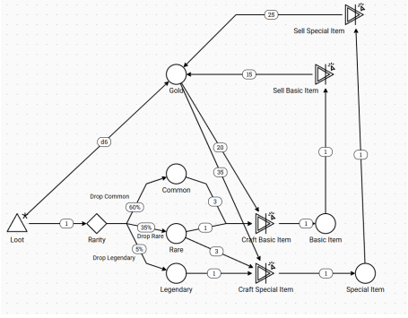
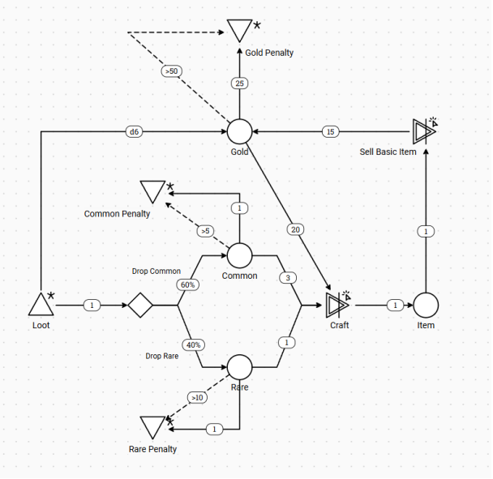

Machinations Crafting Economy
I built a simulation to explore a balancing question: how can a crafting loop make materials worth gathering, give players a reason to spend gold and still offer a meaningful choice between a safe recipe and a cheaper, riskier one?
The base loop
Loot supplies Common and Rare materials. In the base recipe, crafting consumes three Common and one Rare material. Adding gold gives the loop another source and sink: loot yields a six-sided die roll in gold, crafting costs 20 gold and selling the item returns 15. The five-gold difference keeps a craft-and-sell cycle from paying for itself.
What changed across variants
The diagrams show separate versions of the loop used to explore different balancing questions.
Rarity and progression
The legendary loot variant splits materials into 60% Common, 35% Rare and 5% Legendary. Its special recipe uses three Rare materials, one Legendary and 35 gold, and sells for 25 gold.
A separate upgrade path lets players invest 40 gold per level for up to two levels. Each level cuts the Common requirement by one, to a minimum of one Common, and the crafting cost by five gold. Common, Rare and Legendary items in the quality-tier variant sell for 15, 25 and 50 gold respectively.
Risk versus certainty
In the risk variant, the guaranteed recipe costs five Common, two Rare and 20 gold. The alternative costs two Common, one Rare and 15 gold per attempt, with a 50% chance of producing an item.
If each attempt consumes its inputs, two attempts are needed on average per success. That saves one Common material on average and uses the same amount of Rare, while raising the expected gold cost from 20 to 30 and introducing the chance of a failed craft.
Stockpiling thresholds
Crossing five Common, ten Rare or 50 gold triggers a drain of one Common, one Rare or 25 gold from the corresponding pool. These thresholds trigger a penalty and allow temporary balances above the threshold.
Dynamic market
In the linked market variant, gold from loot scales by
20 / (current gold + 20). Larger material stocks
raise the crafting input requirements, and a larger stock of
crafted items lowers their sale price, with a floor of five gold.
Simulation and observations
Early 20-step and 100-step forecasts reported median stocks of 16 and 17 items, with 19 and 14 gold respectively. Later simulation notes recorded the following balances:
- Manual sell, 100 steps: mean gold balance 11.36, peak 21. Mean stocks were 4.96 items, 12.13 Common and 5.65 Rare, with peaks of 8, 18 and 9.
- Auto-sell: mean gold balance 38.35, peak 56.
The figures suggest that the selling rule matters. I’d repeat both policies across matched runs and compare time spent above the drain thresholds as well as average balances.
Model diagrams




